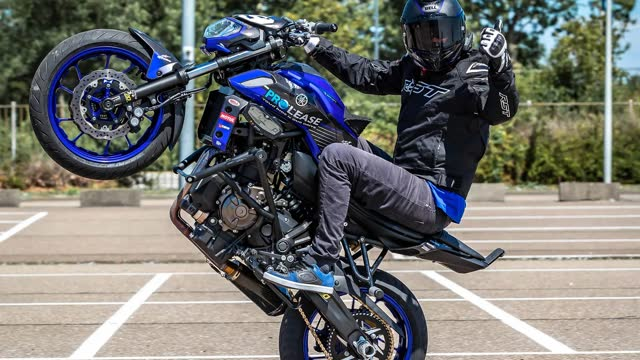
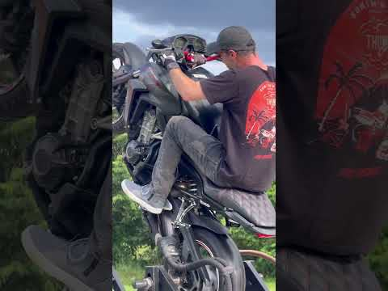

1. Ryga 🇱🇻 (Wheelie Latvia) = najlepszy stosunek jakości do logistyki z Sztokholmu — codzienny lot Ryanair ARN→RIX (~530–1400 SEK), 25 min z lotniska do toru, program 3-poziomowy (wheelie machine → spider → pitbike), po angielsku, ludzie przylatują tam specjalnie z całego świata. ALE: sezon trwa 15.04–15.10 — teraz (listopad) poza sezonem! Rezerwacje na sezon 2027 otwierają się od końca lutego.
2. Teraz zimą (długi weekend): Polska 🇵🇱 — ĆpajŻycie (Ryczołek k. Mińska Maz., ~70 km od lotniska Modlin): wheelie 380 zł/h, 900 zł/3h, MT-07, całorocznie, wszystko w cenie (moto+ochraniacze+instruktor). Lot ~950–1050 SEK w 1 stronę.
3. Czechy 🇨🇿 (wheelie.cz) — indywidualny kurs 2,5 h u stuntmena-medalisty (4999 CZK ≈ 800 zł), jeżdżą też w deszczu — całoroczna opcja.
4. Hiszpania/Portugalia — działają, ale: Madryt = brak taniego LCC z ARN + ceny ukryte za formularzem; Portugalia 80 €/h ale rozbieżność lokalizacji (Sintra vs Porto) i lot tylko 2×/tydz. → raczej na wiosnę z innym budżetem.
5. Tajlandia 🇹🇭 (Mad Wheelies Phuket) — najtańsze sesje (13–87 €!), ale lot zabija budżet weekendu → tylko przy okazji większego wyjazdu.
6. Szwecja 🇸🇪 — dedykowanej szkoły wheelie NIE MA (potwierdzone 11 frazami + forum sporthoj.com). Jedyna styczna opcja: Wheelie Machine (Elliot Gröndahl) — formalnie eventowa, ale uczą balansu; napisać mail i zapytać o indywidualny trening.
| Źródło | Status | Szczeble | Uwagi |
|---|---|---|---|
| cpajzycie.com + IG/YouTube/Google Maps | ✅ COVERED | web_fetch → Chrome CDP | Pełny cennik; FB za login-wall (pominięte, niekrytyczne) |
| wheelie-latvia.com + IG/FB/YT/Calendly | ✅ COVERED | web_fetch → curl | ⚠️ rozbieżność cen L1: 120 vs 70 €/h (Calendly mówi 70 przy własnym moto) |
| madwheeliesthailand.com + EVE Phuket + T&T | ✅ COVERED | web_fetch → curl | ⚠️ konflikt lokalizacji Patong vs Chalong — potwierdzić przed wyjazdem |
| escuelapilotajedorsal11.es (Madryt) | ✅ COVERED | web_fetch | ⚠️ ceny NIEpublikowane (za formularzem rezerwacji) |
| wheelieschool.pt + IG | ✅ COVERED | web_fetch | ⚠️ lokalizacja: strona Sintra, IG Porto |
| iwanttowheelie.co.uk | ✅ COVERED | web_fetch | Pełny kalendarz 2027, £265 |
| wheelieschool.co.uk (Prodigy) | ⚠️ częściowo | web_fetch | Ceny tylko na zapytanie |
| wheelie-lernen.de · mestraining.de · wheelie-training.de · dirkmanderbach.com | ✅ COVERED | web_fetch | 4 szkoły DE, pełne ceny |
| wheelie.cz | ✅ COVERED | web_fetch | Pełny cennik CZK |
| Szwecja (11 fraz, sporthoj.com, SMC, wheeliemachine.se) | ✅ COVERED (werdykt: brak) | DDG przez r.jina.ai | Brak szkoły wheelie w SE/DK/NO/FI — udokumentowane |
| Opinie: Reddit r/motorcycles, r/MotoUK, YouTube | ✅ COVERED | Reddit .rss | Silniki wyszukiwania (Google/Bing/DDG/Brave/Yandex/SearX) = ❌ captcha z IP Pi (próbowano 10+ ścieżek, obejście r.jina.ai częściowo działało) |
| Loty Ryanair | ✅ COVERED | API farfnd (live) | ARN→RIX/WMI/OPO/GDN; MAD = brak trasy |
Właściciel/instruktor: Michał Smolak. IG @cpajzycie_ 24K obserwujących.
✅ ceny z oficjalnej strony ⚠️ MT-07 tylko z opisu vouchera
✅ cennik z oficjalnej strony ⚠️ rozbieżność 120 vs 70 €/h ❌ poza sezonem (XI–IV)
Logo: madwheeliesthailand.com
✅ ceny z 3 źródeł ⚠️ adres: Patong vs Chalong — potwierdzić WhatsAppem
⚠️ brak publicznych cen ⚠️ tylko po hiszpańsku

✅ ceny z oficjalnej strony ⚠️ Sintra vs Porto
✅ cena/daty ze strony + opinie z Reddita
| Szkoła | Cena | Czas | Moto | Uwagi |
|---|---|---|---|---|
| MES — Ilshofen | 175 € | 1 h jazdy/os (max 4 os.) | wheelie trainer (rig) | wymaga prawa jazdy, nie dla początkujących; terminy często wyprzedane |
| Cassian Fischbach — Duisburg | 275 € | ~6 h (10:00–16:00, max 8 os.) | KTM 390 + rama anti-tip | ⭐ 54 wpisy w księdze gości, same pozytywy; kat. A2 + 18 lat |
| Wheelie lernen — Hardheim | 329 € | 5 h | Ducati Hypermotard 698 Mono | instruktor = stuntmen z Hollywood (John Wick!); sezon 2025 wyprzedany |
| Dirk Manderbach | 580 € | 2 dni | BMW G 310 R | od 2010, 3 lokalizacje (Braunschweig/Sauerland/Garmisch) |
✅ ceny z oficjalnych stron ⚠️ opinie zewnętrzne zablokowane z Pi (captcha) — Cassian ma lokalną księgę gości

Klatka z programu
✅ cennik z oficjalnej strony
Sprawdzono 11 fraz (SE/EN/FI/NO/DK) + forum sporthoj.com + ofertę SMC School i wszystkich „MC-skolor" (SMC, MC Stockholm, My Driving Academy, Gillinge). Wszystkie = prawa jazda kat. A / kurvteknik / bandagar — zero wheelie. Szwedzka „Stuntskolan" (stuntman.nu) to kaskaderzy filmowi. Na sporthoj (2018) user pisał wprost: „Då det inte verkar finnas i Sverige" — próbował założyć taką szkołę w Sztokholmie/Mälardalen, projekt nie wypalił. Finlandia: artykuł motouutiset.fi potwierdza, że najbliższa szkoła jest w Anglii.
Jedyna styczna opcja w SE: Wheelie Machine — wheeliemachine.se (Elliot Gröndahl, rekordzista Guinnessa: 918 m wheelie bez rąk!) — formalnie atrakcja eventowa (targi/kawalerskie/pokazy), ale uczą „samspelet mellan gas och broms" i balanspunktu, z instruktorem i motocyklem (supermoto elektryczne albo sporthoj). Nie ma publicznego cennika indywidualnych sesji — warto napisać: info@wheeliemachine.se / +46 763 211 677 i zapytać, czy zrobią trening 1:1. Jak tak — masz szkołę 40 min od domu i pozostałe kraje stają się backupem.
| Trasa | Częstotliwość | Cena w 1 stronę (przykładowy weekend 12–16.11) | RT orientacyjnie | Dojazdu na miejscu |
|---|---|---|---|---|
| ARN → RIX (Ryga) ⭐ | codziennie FR4640 | 529–1394 SEK | ~1200 SEK | Bolt ~25 min (~10 €) |
| ARN → WMI (Modlin, pod ĆpajŻycie) | prawie codziennie | 941–1033 SEK | ~1700–2000 SEK | bus/taxi ~70 km |
| ARN → OPO (Porto) | 2×/tydz. | 1510 SEK | ~3000+ SEK | trena Sintra/Porto |
| ARN → MAD (Madryt) | brak trasy Ryanair | — | SAS/Norwegian (drożej) | Galapagar ~40 km |
| ARN → PRG (Praga, pod Čáslav) | Ryanair — sprawdzić w rezerwacji | — | ~? SEK | Čáslav ~100 km (bus/pociąg) |
Ceny bazowe (bez bagażu), skan API oneWayFares 2026-11-09; przeliczenie: 380 zł ≈ 88 € ≈ 1000 SEK.
Plan A (wiosna 2027): Ryga. Lot ~1200 SEK RT + 2 noce Ryga (~400–600 SEK/noc) + trening 360–520 € (L1→L3). Łącznie ~5500–7000 SEK za kompletny kurs wheelie od zera do pitbike'ów w skręcie, po angielsku, w 3–4 dni. WhatsApp +371 26 644 690 — rezerwacje od końca lutego, terminy znikają szybko (mała szkoła, duży popyt).
Plan B (teraz, zimą): ĆpajŻycie (PL) albo wheelie.cz. ĆpajŻycie = najtańszy wstęp (900 zł/3h), wszystko na miejscu, można dołożyć pitbike/gokarty — lot Modlin ~2000 SEK RT. Czechy = 2,5 h intensywnego 1:1 ze stuntmenem za ~800 zł, jeżdżą zimą w deszczu.
Plan C (darmowy test): mail do info@wheeliemachine.se — jeśli zrobią indywidualną sesję w SE, testujesz balans punkt za darmo od logistyki, a potem Ryga/Polska na pełny kurs.
NIE dla weekendu: Tajlandia (lot ~5–7k SEK RT — ale jak już będziesz w Phuket: 87 € za full pakiet to no-brainer), Madryt (brak LCC + ukryte ceny), UK (drogi przelot, sezon III–X).
⚠️ Bezpieczeństwo: wszystkie szkoły uczą na moto z zabezpieczeniami (cut-out / klatki / maszyny) — nigdy nie ćwicz pierwszych wheelie na własnym moto na ulicy; w Szwecji wheelie na drodze publicznej = groźba cofnięcia prawa jazdy.